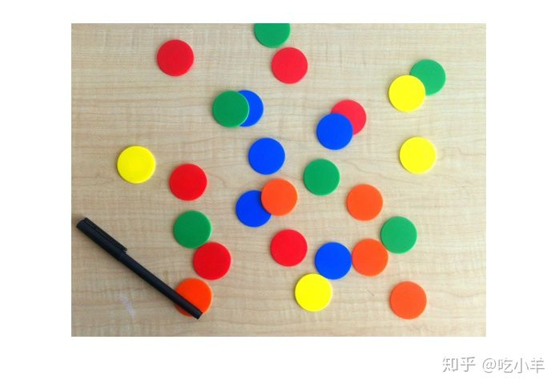
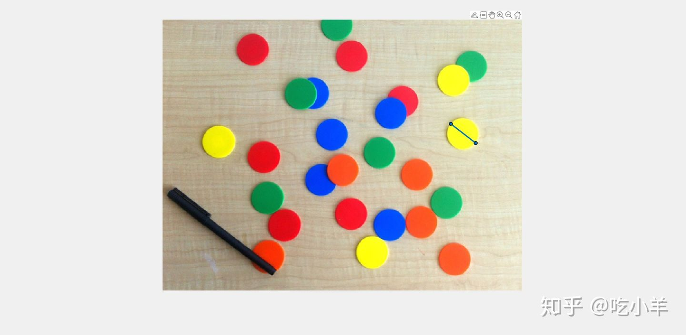
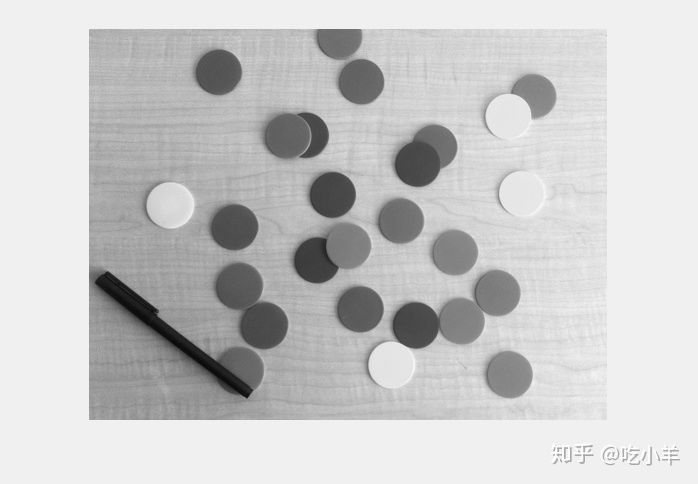
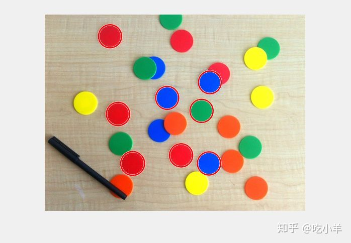
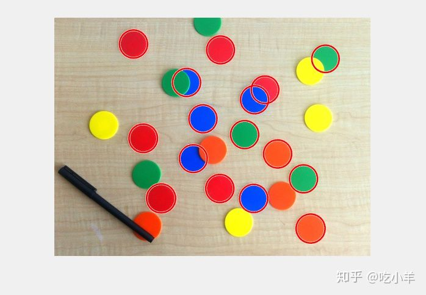
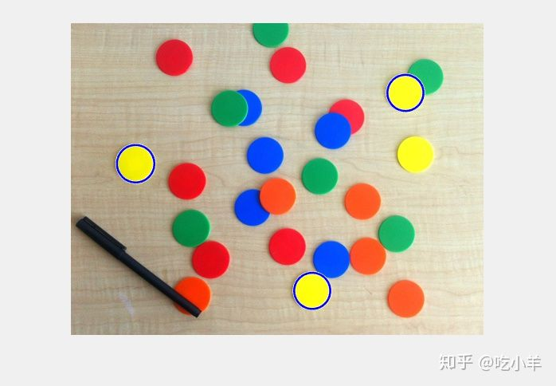
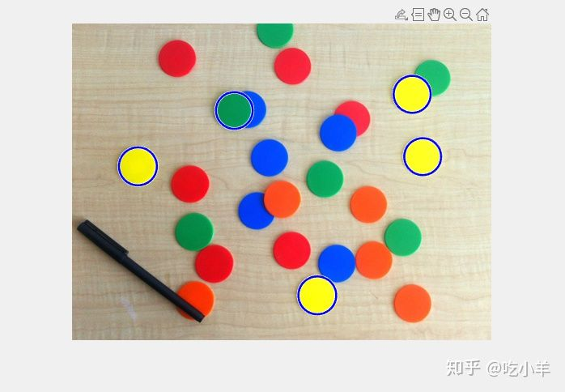
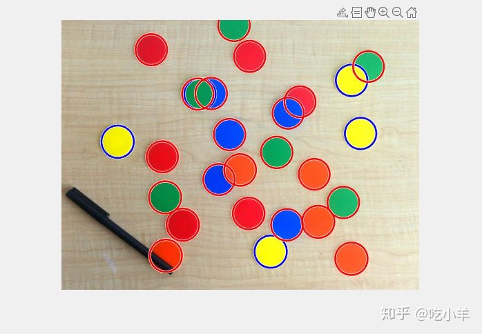
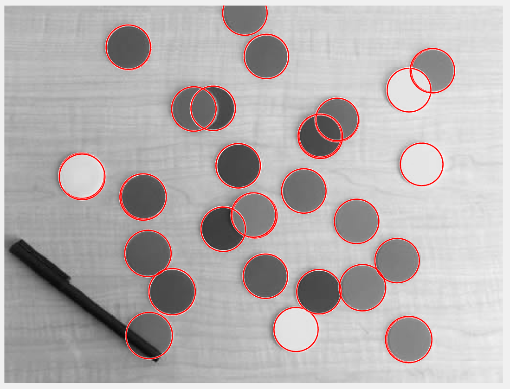

Home
本示例说明如何自动检测图像中的圆形或圆形对象，并可视化检测到的圆形。
步骤1：载入图片
读取并显示各种颜色的圆形塑料筹码的图像。从圆形检测的角度来看，除了要检测大量的圆形之外，此图像中还有一些有趣的事情：
1. 存在不同颜色的筹码，这些筹码相对于背景具有不同的对比度。一方面，蓝色和红色在此背景下具有强烈的对比度。另一方面，某些黄色筹码与背景的对比度不好。
2. 请注意，有些筹码是如何彼此叠置的，而另一些筹码却是彼此靠近并几乎彼此接触的。重叠的对象边界和对象遮挡通常是用于对象检测的具有挑战性的方案。
rgb = imread('coloredChips.png');
imshow(rgb)

步骤2：确定搜寻圆的半径范围
使用 drawline 功能找到合适的圆半径范围。在筹码的近似直径上画一条线。
d = drawline; % 从2018b版本才有这个函数

ROI区域的长度是筹码的直径。典型的筹码的直径范围为40到50像素。
pos = d.Position; diffPos = diff(pos); diameter = hypot(diffPos(1),diffPos(2)) diameter = 45.3448
-------------- note by sunwukong @20220328
2014b中获取圆的直径方法：在imshow(imread('coloredChips.png'))之后，输入
[x,y] = ginput(2)
此时在上述窗口会出现十字鼠标，然后点击圆型筹码直径两端的两个点后，命令窗口会两个点的坐标：
x = 236.8845 281.0762 y = 220.7377 217.8557
然后输入下面命令获取圆的直径：
dist = sum(sqrt(diff(x).^2+diff(y).^2)) dist = 44.2855
步骤3：尝试寻找筹码
imfindcircles函数搜索半径范围内的圆。搜索半径在20到25像素范围内的圆。在此之前，最好先看看对象是比背景更亮还是更暗。要回答该问题，请查看此图像的灰度版本。
gray_image = rgb2gray(rgb); imshow(gray_image)

背景相当明亮，大多数筹码都比背景暗。但是，默认情况下，函数imfindcircles会发现比背景明亮的圆形对象。因此，将imfindcircles的参数“ ObjectPolarity”设置为“ dark”以搜索黑筹码。
[centers,radii] = imfindcircles(rgb,[20 25],'ObjectPolarity','dark')
centers =
[]
radii =
[]
请注意，centers和radii输出是空的，这意味着未找到任何筹码。这是经常发生的，因为imfindcircles是圆形探测器，与大多数探测器类似，imfindcircles具有确定其灵敏度的内部探测阈值。简而言之，这意味着在被认为是有效的检测之前，检测器对某个（圆形）检测的置信度必须大于某个水平。imfindcircles的参数“ Sensitivity”，可用于控制此内部阈值，从而控制算法的灵敏度。较高的“灵敏度”值将检测阈值设置得较低，从而导致检测到更多的筹码。这类似于家庭安全系统中使用的运动探测器的灵敏度控制。
步骤4：提高检测灵敏度
回到筹码图像，有可能在默认灵敏度级别下所有筹码都低于内部阈值，这就是为什么未检测到筹码的原因。默认情况下，“敏感度”（介于0和1之间的数字）设置为0.85。将“灵敏度”提高到0.9。
[centers,radii] = imfindcircles(rgb,[20 25],'ObjectPolarity','dark', ...
'Sensitivity',0.9)
centers = 8×2
146.1895 198.5824
328.8132 135.5883
130.3134 43.8039
175.2698 297.0583
312.2831 192.3709
327.1316 297.0077
243.9893 166.4538
271.5873 280.8920
radii = 8×1
23.1604
22.5710
22.9576
23.7356
22.9551
22.9995
22.9055
23.0298
这次imfindcircles找到了一些筹码——确切地说是八个。centers包含圆心的位置，radii包含这些圆的估计半径。
步骤5：在图片上绘制筹码
函数viscircles可用于在图像上绘制圆。从imfindcircles输出变量centersandradii可以直接传递到viscircles。
imshow(rgb) h = viscircles(centers,radii);

圆心似乎正确定位，并且它们相应的半径似乎与实际筹码非常匹配。但是仍然遗漏了很多筹码。尝试将“灵敏度”进一步提高到0.92。
[centers,radii] = imfindcircles(rgb,[20 25],'ObjectPolarity','dark', ...
'Sensitivity',0.92);
length(centers)
ans = 16
因此，提高“敏感性”会让我们有更多筹码。再次在图像上绘制这些筹码。
delete(h) % Delete previously drawn circles h = viscircles(centers,radii);

步骤6：使用第二种方法（两阶段）查找圆
这个结果看起来更好。imfindcircles有两种不同的寻找筹码的方法。到目前为止，默认方法称为相位编码方法，用于检测圆。imfindcircles中还有另一种方法，通常称为两阶段方法。使用两阶段方法并显示结果。
[centers,radii] = imfindcircles(rgb,[20 25],'ObjectPolarity','dark', ...
'Sensitivity',0.92,'Method','twostage');
delete(h)
h = viscircles(centers,radii);
两阶段方法在0.92的灵敏度下检测更多的圆。通常，这两种方法是互补的，因为它们具有不同的优势。相位编码方法通常比两阶段方法更快且对噪声的鲁棒性更高。但是它可能还需要更高的“灵敏度”水平才能获得与两阶段方法相同的检测个数。例如，如果“灵敏度”水平提高到0.95，则相位编码方法也会找到相同的码片。
[centers,radii] = imfindcircles(rgb,[20 25],'ObjectPolarity','dark', ...
'Sensitivity',0.95);
delete(h)
viscircles(centers,radii);
请注意，imfindcircles的两种方法都可以准确地找到部分可见（被遮挡）筹码的中心和半径。
步骤7：为什么某些筹码不见了？
查看最后一个结果，让人奇怪的是imfindcircles在图像中没有找到黄色筹码。黄筹码与背景的对比度不强。实际上，它们的强度似乎与背景非常相似。黄筹码是否可能真的不像假定的背景那么“暗”？要确认，请再次显示此图像的灰度图。
imshow(gray_image)
步骤8：在图片中找到“明亮”的筹码
与背景相比，黄筹码的强度几乎相同，可能是更亮一些。因此，要检测黄色筹码，请将“ ObjectPolarity”更改为“ bright”。
[centersBright,radiiBright] = imfindcircles(rgb,[20 25], ...
'ObjectPolarity','bright','Sensitivity',0.92);
第9步：绘制不同颜色的“明亮”筹码
通过更改viscircles中的“Color”参数，以不同的颜色绘制明亮的筹码。
imshow(rgb) hBright = viscircles(centersBright, radiiBright,'Color','b');

请注意，找到了三个丢失的黄筹码，但是仍然缺少一个黄色筹码。这些黄筹码很难找到，因为在这种背景下它们不如其他筹码那么突出。
步骤10：降低“ EdgeThreshold”的值
这里还有一个imfindcircles可能有用的参数，即“ EdgeThreshold”。要查找圆，imfindcircles仅使用图像中的边缘像素。这些边缘像素本质上是具有高梯度值的像素。“ EdgeThreshold”参数控制着像素处的梯度值要有多高以以确认其为边缘像素用于计算中。此参数的较高值（接近1）将只包含强边缘（较高的梯度值），而较低的值（接近0）则更宽容，甚至包括较弱的边缘（较低的梯度值）。在缺少黄色筹码的情况下，由于对比度低，因此（在筹码的圆周上）某些边界像素的梯度值较低。因此，降低“ EdgeThreshold”参数，以确保计算中包括黄筹码的大部分边缘像素。
[centersBright,radiiBright,metricBright] = imfindcircles(rgb,[20 25], ...
'ObjectPolarity','bright','Sensitivity',0.92,'EdgeThreshold',0.1);
delete(hBright)
hBright = viscircles(centersBright, radiiBright,'Color','b');

步骤11：将“深色”和“明亮”筹码绘制在一起
现在imfindcircles找到所有黄色的，还有绿色的。用蓝色绘制这些筹码，并用红色绘制较早发现的其他筹码（“ ObjectPolarity”设置为“暗”）。
h = viscircles(centers,radii);

检测到所有筹码。应该注意的是，更加“激进地”调整参数，会发现更多的筹码，但同时也会增加检测到错误筹码的可能性。在可以找到的真实筹码的数量（检测率）和在其中找到的真实筹码的数量（错误警报率）之间需要权衡。
我的测试结果及程序
下面是我测试的代码：
clear all
close all
rgb = imread('coloredChips.png');
figure(1);
imshow(rgb);
[x,y] = ginput(2)
dist = sum(sqrt(diff(x).^2+diff(y).^2))
minRadius = int8(dist/2 - 3)
maxRadius = int8(dist/2 + 3)
gray_image = rgb2gray(rgb);
figure(2);
imshow(gray_image);
[centers,radii] = imfindcircles(gray_image,[minRadius maxRadius],'ObjectPolarity','dark','Sensitivity',0.94,'Method','twostage'); % radiu must be integer type
h=viscircles(centers,radii);
[centersBright,radiiBright,metricBright] = imfindcircles(gray_image,[minRadius maxRadius],'ObjectPolarity','bright','Sensitivity',0.95,'EdgeThreshold',0.1);
hBright = viscircles(centersBright, radiiBright);

注：本文根据MATLAB官网内容修改而成。